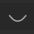

(EXERCISE) Simple mesh editing¶
In this exercise you will use some mesh modifiers on an iso-surface of a CT scan of a fish and try to see if you can reveal the insides.
Once you opened the exercise blend file sme_assignment.blend you'll see the fish iso-surface above a plane.
Decimate - Reducing the triangles¶
The fish 3D model, for your convenience, has been divided into two parts: the fishskin and fishbones. Combined, this model has a large amount of triangles (155k for the fishskin and 573k for the fishbones). On lower end devices this can slow everything down to a crawl. In order to be able to add modifiers or edit the meshes with reasonable interactivity you first need to decimate the meshes. The decimation is for reducing the number of triangles, by merging adjacent triangles together into one, iteratively.
- Select the fishskin by clicking on the fishskin with
LMB. - Once selected go the Modifiers tab in the properties editor.
- Click
Add Modifierand add theDecimatemodifier (it's in the Generate column). - Keep the decimation type set to
Collapse, set theRatioto0.5and pressEnter. The mesh processing will take a couple of seconds but will immediately reduce the number of triangles to ~77k, which is visible in the modifier underFace Count. You can even reduce it to a lower number but it might affect the appearance and shape of the model negatively by creating hard edges on the surface. - Once you are satisfied with the results press
Apply, under the dropdown-menu arrow to the right of Decimate , or by pressingCtrl-A, while focused on the Decimate modifier, to make the changes permanent. Again, this can take a few seconds. - Now that the fishskin triangles have been reduced, select it and press
Hto hide it or click the icon in the Outliner. This simultaneously hides the fishskin and reveal the fishbones. - Preform the same steps the fishbones and try to reduce the triangle count significantly without affecting the appearance of the model.
- Now unhide the fishskin again for the next assignment by clicking the  icon.
Smooth - Ironing the creases¶
The geometry of the fishskin and the fishbones both look a bit rough because of the iso-surface extraction algorithm. If that is not desired, the rough edges can be smoothed out with the Smooth Modifier.
- Select the fishskin model by clicking on the fishskin with
LMB. - Go to the Modifiers tab in the properties editor.
- Click
Add Modifierand add theSmoothmodifier (it's in the Deform column). - Keep the
Factorat0.5but increase theRepeatto5. Watch out with using the slider, every change re-triggers the modifier and when you accidentally slide to a high number it will take a while to calculate.
Unfortunately you will notices that the Smooth modifier creates tears along the skin model, this conveniently revealed that the underlying mesh triangles are not fully connected and are present in connected patches. These patches stems from the creation of this model where the calculation of the geometry was done in multiple processors and each patch was created by a separate process. This can be fixed in the Edit-mode but that will be covered in the advanced course.
- The
Factoris good as it is, but changing the value shows what kind of drastic effect it has. - Once you are satisfied with the smoothness of the fishskin press
Applyand try to do the same with the fishbones.
Boolean - Slicing the geometry¶
If you wanna both show the inside of the fish with the context of the outside you can use slice through the fishskin model and reveal the insides of the fish by using a Boolean Modifier.
- Before you add the Boolean Modifier you first need to reveal the
fishskinmesh object again by clicking the icon in the Outliner. - Select the
fishskinmesh object and go to the Modifiers tab in the properties editor to add aBooleanmodifier (it's in the Generate column).
Now that the Boolean modifier is added we still miss another 3D mesh object to perform the Boolean operation with. You are now gonna prepare the other mesh object.
- Move the mouse into the 3D view and add a new UV sphere with
Shift-A > Mesh > UV Sphere - Scale and translate (
SandGkeys) the UV sphere so that it overlaps a part of the fish which you want to clip away. - The UV sphere is now shown as a solid surface, which is not desirable when you want to use it for clipping because you want to see through it. You can change the representation of an object in the 3D view using the Object properties under
Viewport Display: setDisplay AstoWire. - Also when you want to look at the results in Rendered mode you need to make the sphere invisible using the
Ray Visibilitysettings underVisibility: disable all check-boxes (Camera, Diffuse, Glossy, Transmission, Volume Scatter and Shadow)
Now that you prepared the mesh object to preform the Boolean operation with, you can continue setting up the Boolean modifier.
- Select the
fishskinmesh object and go to the Modifiers tab in the properties editor to reveal the already added Boolean modifier. - Now under
Object, select theSpheremesh object. - Before we want to start moving the clipping Sphere around we want to change the
SolvertoFast. This is more simpler and better performing solver and in our case, with the underlying broken patched mesh, also a better option since this solver is able to handle this type of geometry. - Now if you select the
Sphereobject and translate and scale it over thefishskinmesh object you can clip away any desired part as the Boolean modifier updates in real time.
As you might have noticed, this Boolean modifier does have some problems with this current mesh and placement of the clipping sphere must be precise. This off course is not always the cause but it should be kept in mind when working with the Boolean modifier.
Finally you can view your results with Cycles with Rendered shading (Z > Rendered) for better lighting and materials. Or you can give the camera a better position and make a nice final render.